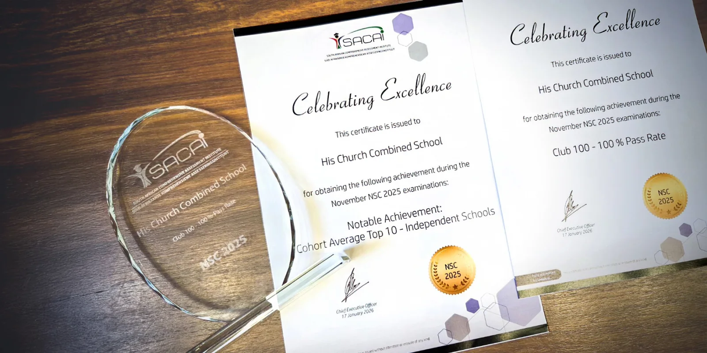

Principal
E. Botha
- Staff
- Academic Staff
- Invigilators
- Parents
- Servants (Student Leaders)
- Female Staff
- Hospitality Department

Since 1994
His Church School (formerly known as City of Life Academy) was founded in 1994 by Fiona Desfontaine to provide a Christian school for children from His Church (formerly known as City of Life). The first principal was Mrs. Cheryl van der Merwe. The school has since grown and currently caters for learners from Grade 1 to Grade 12.
The first learning centre was hosted in what is affectionately known as "The Fish Bowl", a small single room leading off the foyer. Later the upper floor of His Church was developed into premises for the school.
In 1997, the school faced the possibility of closing down due to a decision by the Municipal Council and local community. The school lost a number of students in the process. When it had been officially declared that it was to retain its right to exist, His Church School had to start the slow process of regaining students.
In 2004, we received an additional room that was the former computer training centre of the Christian Bible Institute. In January 2005, the school's governing board applied to the Municipal Council for a relaxation of the maximum enrolment number from 60 to 120 students, awarded in May of the same year.
In 2015 the SGB made the decision to implement the writing of the NSC exams as HCS' exit exam. Currently the entire school, Grades 1 to 12, uses the CAPS curriculum.
"For I know the plans I have for you," declares the Lord, "plans to prosper you and not to harm you, plans for a hope and a future."Jeremiah 29:11 (NIV)
Our Purpose
“Our Goal Is To Please Him”
His Church School desires to establish Godly foundations for each child's life and to educate children so that they will impact their generation for Eternity.
We desire to raise:
Our Calling
Excellence Through Teamwork
Governance
SGB
Principal
Esther Botha
E. Botha
A. Botha
B. Cawood
B. Govender
T. Botha
S. Green
R. Geldenhuys
Esther Botha
E. Botha
A. Botha
B. Cawood
B. Govender
T. Botha
S. Green
R. Geldenhuys
Meet the Team
Tap or press a card to learn more about each staff member